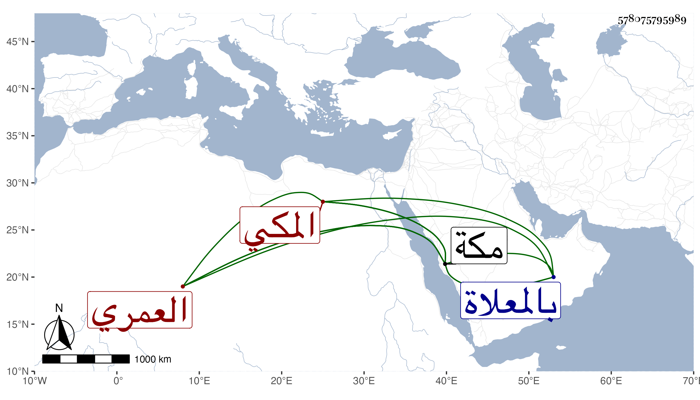

0902Sakhawi.DawLamic.ITO20230111-ara1.EIS1600.578075795989
Biography ID: 578075795989
700
علي بن جسار بن عبد الله بن عمر بن مسعود العمري المكي كان من أعيان القواد العمرة مشهورا بعقل وخير ووفاء في القول مقدما عند صاحب مكة أحمد بن عجلان لكونه أخاه لأمه ثم لا زال مرعيا حتى مات في شوال سنة عشرين بالعد من منازل بني حسن ونقل إلى مكة فدفن بالمعلاة وأظنه بلغ الستين أو جازها وخلف عدة أولاد نجباء ودنيا . قاله الفاسي في مكة .
